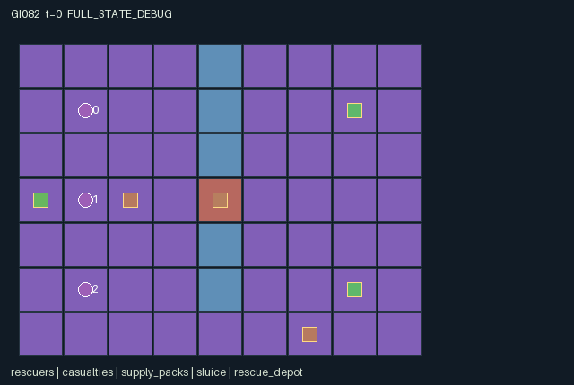

GI082 / SPATIAL
灯火洪灾救援
搬运与交接伤员，配合专长治疗、开路及短时共享感知，争取在时限内完成救援。
Original saved demonstration
Recorded native state, often authored scripts or interventions; information scope and failures are preserved in the original provenance. This is a saved demonstration, not live browser play.

Release verification episode
Untrained uniform legal actions. Actual JAX state sampled along the full original episode; full-state debug camera. No human performance or learning claim.

Run this game
crucibles play --game 82
Start Python locally, then open the address printed by the terminal. Installation, multiplayer, takeover and keyboard controls →
Objective, rewards & ending
Exact task contract
{
"objective": "Carry two casualties to Manhattan distance at most one from the depot. Each delivery gives all roles +1 and each expiry gives all roles -1.",
"natural_termination": "Both casualty statuses resolved (rescued or lost), otherwise horizon 96. Natural completion has priority. Raw terminal calls absorb with zero reward.",
"interaction": "Physical carry and mutual handoff, specialist treatment and route opening, scarce common supply, temporary shared sensing and finite unsupported lifetimes couple the three roles.",
"observation_access": "Public map, gate, depot, supplies and aggregate outcomes. Scout Manhattan sensor radius 4, other roles 2, through walls. A live beacon shares radius-2 sensing around its fixed position with everyone. Entity attributes use actual visibility. Private diagnostic flags do not become public scene events."
}Declared per-step reward bounds: -2 to 2. Observability: partially_observable.
Rules
- Rigger spends two shared supplies to open the central sluice permanently.
- Medic spends one supply to stabilize an adjacent casualty and stop its countdown.
- Each role carries at most one casualty; paired adjacent handoff transfers to an empty receiver.
- Recover attempts casualty pickup before pack collection; lowest eligible index wins.
- Beacons last six ticks and share actual radius-two sensing with every role.
- Deliver carried casualties within one tile of the depot; unstabilized casualties can expire.
- Moves into other starting cells or shared requested destinations fail; no swaps.
- Both casualties resolved ends naturally; otherwise step 96 truncates. Raw terminal state absorbs.
Original mechanism document (historical status wording retained)
# Lantern Flood — game-v3-00082 Status: AUTHORED_NOT_EXECUTED. Initial source attempt 0, proposal ordinal 82, window 0, training-source stream only. A=3, O=121, U=9, H=96. Observations are float32 within [-1, 96]; rewards are float32 within [-2, 2]. Stored numbers are int32 and flags bool. These finite bounds describe rules, not performance acceptance gates. ## Spatial rules and temporal consequences The original 9 by 7 layout has a central barrier, gated crossing at (4,3), and longer southern crossing through y=6. Roles start at (1,1), (1,3), (1,5); casualties at (7,1), (7,5), with unsupported lifetimes 54 and 60. Depot (0,3) accepts a carried casualty from distance at most one. Packs at (2,3) and (6,6) each add two supplies; initial common supply is three. Movement updates actual carrier and casualty positions. Recover selects the lowest-index adjacent free casualty if the role is empty, then attempts a pack if no pickup occurred. Each pack is consumed once. Rigger work at gate distance at most one spends two and opens permanently. Medic work spends one on the lowest-index adjacent unstabilized casualty. Stabilization arrests countdown without delivering. Scout specialist work has no effect. Handoff requires both donor and adjacent empty receiver to choose action 7; each receiver accepts at most one casualty. Beacons stay at deployment coordinates, last six ticks and refresh when reused; their cost is the action opportunity, not supplies. Pickup, treatment and handoff follow movement. Delivery occurs before lifetime expiration. Unresolved, unstabilized and undelivered casualties lose one lifetime tick. Rescued or expired casualties become inactive; status preserves the outcome. Any mixture of rescue and loss ends naturally when both are resolved. Reward is only shared delivery minus expiry events, without discovery or movement shaping. ## Partner dependence and strategies Opening early lets the scout and medic use the short crossing but consumes two of three initial supplies. Treating both casualties first leaves too little to open without a recovered pack. Alternatives include south-route rescue, early supply recovery, fast transport without stabilization, or handoffs freeing a specialist. Scout sensing and well-placed beacons reveal real casualty states before teammates commit to paths. A teammate blocking a junction imposes lifetime cost on a carrier. Prospective paired tests: compare adjacent rigger work with wait, then gate state, common supply and another role's future crossing mask; compare medic work with wait and future casualty lifetime; compare beacon versus wait and teammates' victim_vis/observations; compare mutual versus donor-only handoff and subsequent physical coordinates. These are source hypotheses, not executed effects. Future separately specified variations in opening/treatment cost, sensor radius, beacon lifetime, casualty positions and route length could change rescue order and delegation. They are not implemented or measured here. ## Information and scene boundary The map, landmarks, supply and aggregate outcomes are public. Sensors use Manhattan distance through walls, which block movement but not sensing. Local casualty attributes exactly match native observed life/stable/carrier/status. Only public aggregate counters, gate openness and supply appear in scene event channels. Private treatment/pickup/handoff diagnostics remain raw debug state, not public role overlays. ## Action legend - 0: Wait. - 1: Move north. - 2: Move east. - 3: Move south. - 4: Move west. - 5: Recover: pick adjacent casualty if empty; otherwise collect adjacent supply pack. - 6: Specialist work: rigger opens sluice; medic stabilizes casualty; scout has no effect. - 7: Mutual adjacent casualty handoff. - 8: Place or renew six-tick shared sensor beacon. ## Exact observation layout - Columns [0, 6), self: Own role one-hot(3), x,y,carrying index (-1 empty). - Columns [6, 11), public: Clock, shared supply, gate-open flag, cumulative rescued and lost. - Columns [11, 23), local: Visible rescuers: x,y,carrying per slot (9), then 3 visibility flags; hidden features -1. - Columns [23, 37), local: Visible casualties: x,y,life,stable,carrier,status per slot (12), then 2 visibility flags; hidden features -1. - Columns [37, 45), local: Visible packs: x,y,value per slot (6), then 2 visibility flags; hidden features -1. - Columns [45, 54), public: Public beacons: x,y,TTL per slot; inactive features -1. - Columns [54, 117), public: Public 7-by-9 map flattened row-major yx. - Columns [117, 121), public: Public gate x,y followed by depot x,y. ## Interface and terminal boundary The binding addendum terminal_policy is absorbing_raw_state_natural_priority_v1. A nonterminal input increments t exactly once. Natural completion has priority over horizon truncation. raw_step selects the original entire tree and zero reward when the input done flag was already true, so terminal clock, observations and causes are preserved. Pure advance expressions may be formed on terminal inputs, but their results are discarded without side effects. No raw call resets. info returns scalar done_all, terminated and truncated; dones is the joint flag repeated across A roles. Out-of-range or masked actions deterministically become wait. Contextual commands are legal attempts, including unsuccessful attempts. Movement masks use terrain and bounds, with agent collisions resolved after simultaneous proposals. Entering another role's starting cell or a jointly proposed destination fails, so swaps and following into a just-vacated cell fail. All role slots remain physical; disabled/restrained roles keep no-op. The reset is deterministic and intentionally ignores supplied PRNG keys. No hidden mutable state, external cache, callbacks, stochastic distribution or remote service is used. All small signed holder/status/index fields are represented losslessly as int32, as the addendum permits. Declared invariants are nonnegative fields listed in manifest.json and unique active agent positions. All source state leaves are declared. Runtime preservation, shapes, dtypes and finite bounds remain unverified by execution. ## Literal source evidence Source SHA-256: `ad66babf039e1ebd3643e035f8cd685e5641ebd2a67714c4e683c5a91ac5af2e`. Manifest SHA-256: `9722a9e0785236a9b080b9a0a316206a30188562b984bedb4fedac73e91eaba7`. Scene SHA-256: `859328c2a4012664ba6a148b1028b600a78dc547b657c75b87b855b9a4bddf94`. Witness file SHA-256: `adb673bd274375a4e7dd1570441cc2141734327c1d28786b08f5f02c049e7bd2`. - `candidate.py:12-29`: `refresh`. - `candidate.py:31-61`: `reset`. - `candidate.py:63-70`: `legal_actions`. - `candidate.py:72-84`: `observe`. - `candidate.py:86-156`: `advance`. - `candidate.py:158-163`: `raw_step`. Actual transition expressions: - `candidate.py:102`: `opened = (a[1] == 6) & near_gate & ~s['gate_open'][0] & (s['supply'] >= 2)` - `candidate.py:124`: `stabilize = (a[2] == 6) & jnp.any(need) & (n['supply'] > 0)` - `candidate.py:138`: `handoff = (before[v] >= 0) & (a[c] == 7) & jnp.any(willing) & ~used` - `candidate.py:142`: `delivery = (n['carrier'] >= 0) & (jnp.sum(jnp.abs(n['victim_pos'] - s['depot_pos'][0]), axis=1) <= 1) & (s['victim_status'] == 0)` ## Community references and integration boundary Original rules and layouts were invented for this batch. No upstream code was copied. The supplied JaxMARL README informed the separate public integration target: parallel agent-keyed actions, observations, rewards and dones with __all__. This source implements the required native flat-array interface; the implementation worker owns the adapter. The supplied Pgx README informed legal-mask and explicit termination concepts, not board-game rules. Craftax informed the distinction between actual game state and rendering and raw stepping versus external resets. PureJaxRL and Craftax_Baselines/ppo_rnn.py are algorithm/integration references; they are not a new game library or a replacement for the frozen experimental learner. Only supplied snapshots were consulted. Reference URLs and exact snapshot hashes are retained in generation_record.json; no external link was followed. ## Evidence limits This package was not executed. Author-side AST whitelist, JSON/schema parsing, state-key comparison and hashing are static preflight only. They do not establish runtime correctness, eager/JIT/vmap parity, witness legality, successful play, solvability, strategic depth, learning, non-isomorphism, throughput, animation acceptance or meta-learning/transfer. The prospective paired-action comparisons above require actual later execution. No observed score, successful trajectory, training or test receipt is fabricated. No JAX import, model/API call, remote/SSH execution or download occurred. The proposal has one fixed ruleset/layout; possible future variations are ideas, not a hidden sampler. Repairs after submission require a separately assigned actual-feedback request.
Commands
Roles & abilities
agent_0 Scout: radius-four sensor
agent_1 Rigger: permanent sluice opening
agent_2 Medic: casualty stabilization
Observation permissions
Training receives only the original observation rows. Role cameras use declared visibility; debug cameras are explicitly marked. Local benchmark records log debug exposure and role takeover history.
Exact observation layout
[
{
"slice": [
0,
6
],
"meaning": "Own role one-hot(3), x,y,carrying index (-1 empty)",
"visibility": "self"
},
{
"slice": [
6,
11
],
"meaning": "Clock, shared supply, gate-open flag, cumulative rescued and lost",
"visibility": "public"
},
{
"slice": [
11,
23
],
"meaning": "Visible rescuers: x,y,carrying per slot (9), then 3 visibility flags; hidden features -1",
"visibility": "local"
},
{
"slice": [
23,
37
],
"meaning": "Visible casualties: x,y,life,stable,carrier,status per slot (12), then 2 visibility flags; hidden features -1",
"visibility": "local"
},
{
"slice": [
37,
45
],
"meaning": "Visible packs: x,y,value per slot (6), then 2 visibility flags; hidden features -1",
"visibility": "local"
},
{
"slice": [
45,
54
],
"meaning": "Public beacons: x,y,TTL per slot; inactive features -1",
"visibility": "public"
},
{
"slice": [
54,
117
],
"meaning": "Public 7-by-9 map flattened row-major yx",
"visibility": "public"
},
{
"slice": [
117,
121
],
"meaning": "Public gate x,y followed by depot x,y",
"visibility": "public"
}
]Entity visibility & attributes
[
{
"id": "rescuers",
"kind": "agent",
"count": 3,
"position": [
"pos"
],
"active": [
"agent_active"
],
"visibility": [
"agent_vis"
],
"attributes": [
{
"state_path": [
"carrying"
],
"meaning": "Held casualty index; -1 empty",
"display": "category"
}
]
},
{
"id": "casualties",
"kind": "object",
"count": 2,
"position": [
"victim_pos"
],
"active": [
"victim_active"
],
"visibility": [
"victim_vis"
],
"attributes": [
{
"state_path": [
"life"
],
"meaning": "Unsupported lifetime remaining",
"display": "bar"
},
{
"state_path": [
"stable"
],
"meaning": "Stabilization stops lifetime loss",
"display": "flag"
},
{
"state_path": [
"carrier"
],
"meaning": "Carrier role index; -1 ground",
"display": "category"
},
{
"state_path": [
"victim_status"
],
"meaning": "0 unresolved; 1 rescued; 2 lost",
"display": "category"
}
]
},
{
"id": "supply_packs",
"kind": "resource",
"count": 2,
"position": [
"pack_pos"
],
"active": [
"pack_active"
],
"visibility": [
"pack_vis"
],
"attributes": [
{
"state_path": [
"pack_value"
],
"meaning": "Units added to shared supplies",
"display": "number"
}
]
},
{
"id": "sluice",
"kind": "gate",
"count": 1,
"position": [
"gate_pos"
],
"active": [
"gate_active"
],
"visibility": [
"gate_vis"
],
"attributes": [
{
"state_path": [
"gate_open"
],
"meaning": "Permanently opened crossing",
"display": "flag"
}
]
},
{
"id": "rescue_depot",
"kind": "landmark",
"count": 1,
"position": [
"depot_pos"
],
"active": [
"depot_active"
],
"visibility": [
"depot_vis"
],
"attributes": []
},
{
"id": "sensor_beacons",
"kind": "object",
"count": 3,
"position": [
"beacon_pos"
],
"active": [
"beacon_active"
],
"visibility": [
"beacon_vis"
],
"attributes": [
{
"state_path": [
"beacon_ttl"
],
"meaning": "Remaining shared sensor ticks",
"display": "bar"
}
]
}
]Actual verification & provenance
Per-game execution receipt
{
"game": "gi082",
"status": "PASS",
"verification_revision": 2,
"source_sha256": "ad66babf039e1ebd3643e035f8cd685e5641ebd2a67714c4e683c5a91ac5af2e",
"seed": 20261101,
"runtime": {
"jax": "0.4.38",
"numpy": "1.26.4",
"devices": [
"TFRT_CPU_0"
]
},
"dimensions": {
"num_agents": 3,
"observation_size": 121,
"num_actions": 9,
"max_steps": 96
},
"checks": {
"eager_reset": {
"status": "PASS",
"seconds": 4.770054817199707
},
"observation_spaces_legal_masks": {
"status": "PASS",
"seconds": 0.7000725269317627
},
"eager_step": {
"status": "PASS",
"seconds": 3.0175280570983887
},
"jit_reset": {
"status": "PASS",
"seconds": 0.3979020118713379
},
"jit_step": {
"status": "PASS",
"seconds": 1.819727897644043
},
"eager_jit_integer_parity_float_measurement": {
"status": "PASS",
"seconds": 0.0015113353729248047
},
"jit_vmap_reset": {
"status": "PASS",
"seconds": 0.6006391048431396
},
"jit_vmap_step": {
"status": "PASS",
"seconds": 1.665449857711792
},
"outer_autoreset_api": {
"status": "PASS",
"seconds": 1.663032054901123
},
"full_original_horizon_episode_and_render": {
"status": "PASS",
"seconds": 2.4162161350250244
}
},
"human_scores": null,
"browser_controls": "PENDING",
"failures": [],
"elapsed_seconds": 17.957765817642212,
"float_parity_max_abs": 0.0,
"numerical_parity": "EXACT",
"raw_terminal_absorbing": "PASS",
"terminal_outer_reset": "PASS",
"episode_steps": 60,
"scripted_random_returns": [
-2.0,
-2.0,
-2.0
],
"terminal": true,
"demo_information": "FULL_STATE_DEBUG",
"demo_frames": 16,
"render_roles_checked": 3
}Chromium control verification
{
"game": "gi082",
"status": "PASS",
"human_scores": null,
"engineering": true,
"checks": [
"catalog_selected_and_real_native_reset",
"dom_queue_and_native_step",
"second_participant_ownership_and_native_joint_step",
"all_roles_individually_controllable_no_role_cap",
"explicit_debug_camera",
"release_to_pure_ai_without_reset"
],
"seconds": 4.054030418395996
}Original identity and file hashes
{
"id": 82,
"key": "gi082",
"title": "灯火洪灾救援",
"summary": "搬运与交接伤员，配合专长治疗、开路及短时共享感知，争取在时限内完成救援。",
"tags": [
"分工救援",
"信息共享"
],
"family": "spatial",
"dimensions": {
"num_agents": 3,
"observation_size": 121,
"num_actions": 9,
"max_steps": 96
},
"source_sha256": "ad66babf039e1ebd3643e035f8cd685e5641ebd2a67714c4e683c5a91ac5af2e",
"manifest_sha256": "9722a9e0785236a9b080b9a0a316206a30188562b984bedb4fedac73e91eaba7",
"files": [
{
"file": "candidate.py",
"sha256": "ad66babf039e1ebd3643e035f8cd685e5641ebd2a67714c4e683c5a91ac5af2e",
"bytes": 10863,
"origin": "work/exp_2/game_incubator_v3/community_games222_225_visualization_root222_v1/native154_candidate/registry/v2/games/game-v3-00082/candidate.py"
},
{
"file": "manifest.json",
"sha256": "9722a9e0785236a9b080b9a0a316206a30188562b984bedb4fedac73e91eaba7",
"bytes": 13607,
"origin": "work/exp_2/game_incubator_v3/community_games222_225_visualization_root222_v1/native154_candidate/registry/v2/games/game-v3-00082/manifest.json"
},
{
"file": "scene.json",
"sha256": "859328c2a4012664ba6a148b1028b600a78dc547b657c75b87b855b9a4bddf94",
"bytes": 6454,
"origin": "work/exp_2/game_incubator_v3/community_games222_225_visualization_root222_v1/native154_candidate/registry/v2/games/game-v3-00082/scene.json"
},
{
"file": "mechanism.md",
"sha256": "83123e3b433d71e3d0cf181544135ed7165d23a3609fb31e13c9d116b74d06a2",
"bytes": 8968,
"origin": "work/exp_2/game_incubator_v3/sources/game-v3-00082/attempt_00/mechanism.md"
},
{
"file": "playthrough.json",
"sha256": "adb673bd274375a4e7dd1570441cc2141734327c1d28786b08f5f02c049e7bd2",
"bytes": 3354,
"origin": "work/exp_2/game_incubator_v3/sources/game-v3-00082/attempt_00/playthrough.json"
}
],
"original_status": "NATIVE154_REFERENCE",
"original_saved_replay": true,
"release_validation": "PASS",
"human_scores": null,
"browser_validation": "PASS"
}